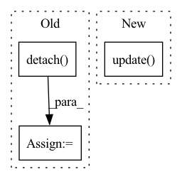

Pattern ID :34688

Before Change
// TODO abstract weight into a class
weight = 1. - D(f_s)
weight = weight / weight.mean()
weight = weight.detach()
// domain adversarial loss for D_0
adv_loss_D_0 = domain_adv_D_0(f_s, f_t, w_s=weight)
// entropy loss
y_t = F.softmax(y_t, dim=1)
entropy_loss = entropy(y_t, reduction="mean")
loss = cls_loss + 1.5 * args.trade_off * adv_loss_D + \
args.trade_off * adv_loss_D_0 + args.gamma * entropy_loss
// compute gradient and do SGD step
optimizer.zero_grad()
loss.backward()
optimizer.step()
lr_scheduler.step()
cls_acc = accuracy(y_s, labels_s)[0]
tgt_acc = accuracy(y_t, labels_t)[0]
losses.update(loss.item(), x_s.size(0))
cls_accs.update(cls_acc.item(), x_s.size(0))
tgt_accs.update(tgt_acc.item(), x_s.size(0))
domain_accs_D.update(domain_adv_D.domain_discriminator_accuracy, x_s.size(0))
domain_accs_D_0.update(domain_adv_D_0.domain_discriminator_accuracy, x_s.size(0))
labels_in_target = torch.FloatTensor([c in target_idxes for c in labels_s]).to(device)
labels_in_target_num = labels_in_target.sum()
if labels_in_target_num != 0:
avg_importance = (weight.squeeze() * labels_in_target / labels_in_target_num).sum()
importance_weights.update(avg_importance.item(), int(labels_in_target_num.item()))
batch_time.update(time.time() - end)
After Change
// debug: output class weight averaged on the partial classes and non-partial classes respectively
partial_class_weight, non_partial_classes_weight = \
importance_weight_module.get_partial_classes_weight(w_s, labels_s)
partial_classes_weights.update(partial_class_weight.item(), x_s.size(0))
non_partial_classes_weights.update(non_partial_classes_weight.item(), x_s.size(0))
batch_time.update(time.time() - end)
end = time.time()
In pattern: SUPERPATTERN
Frequency: 3
Non-data size: 3
Instances
Fragment ID: 99579183
Project Name: thuml/transfer-learning-library
Commit Name: b572f553f392040359d3e98ded8c73f97fd042a0
Time: 2021-02-08
Author: 13126830206@163.com
File Name: examples-da/partial/iwan.py
M Class Name: AnonimousClass
N Class Name: AnonimousClass
M Method Name: train(10)
N Method Name: train(11)
M Parent Class:
N Parent Class:
M File Name: examples-da/partial/iwan.py
N File Name: examples-da/partial/iwan.py
M Start Line: 171
M End Line: 254
N Start Line: 173
N End Line: 251
'>
Before Change
tb_exp_averager.register("Loss_average", init_average)
update_list_avg = [tb_exp_averager.forward("Loss_average", _) for _ in update_list]
// Computing gradients for fnet and updating weights
fnet_loss = args.warp_scaling * warp_loss + fnet_loss.detach()
//fnet_loss = fnet_loss.cuda()
//fnet_optimizer.zero_grad()
//fnet_loss.backward()
//fnet_optimizer.step()
After Change
optimizer_d.zero_grad()
scaler.scale(discrim_loss).backward()
scaler.step(optimizer_d)
scaler.update()
//fnet_loss = fnet_loss.cuda()
//fnet_optimizer.zero_grad()
//fnet_loss.backward()
//fnet_optimizer.step()
'>
Fragment ID: 99579182
Project Name: dwightfoster/pytorch-tecogan
Commit Name: 025e19b3ae985186b2d39607436eda9a3579b8c1
Time: 2021-03-17
Author: dwightfoster03@gmail.com
File Name: code/train.py
M Class Name: AnonimousClass
N Class Name: AnonimousClass
M Method Name: TecoGAN(11)
N Method Name: TecoGAN(11)
M Parent Class:
N Parent Class:
M File Name: code/train.py
N File Name: code/train.py
M Start Line: 68
M End Line: 352
N Start Line: 68
N End Line: 357
'>
Before Change
predicted_probs, predicted = self.get_predicted(outputs)
y_pred_probs += list(predicted_probs.cpu().detach().numpy())
y_pred += list(predicted.cpu().detach().numpy())
y_true += list(labels.cpu().detach().numpy())
After Change
predicted_probs, predicted = self.get_predicted(outputs)
y_pred = list(predicted.cpu().detach().numpy())
y_true = list(labels.cpu().detach().numpy())
self.running_metrics.update(y_true, y_pred)
if criterion:
total_loss = total_loss / len(dataloader.dataset)
'>
Fragment ID: 99579181
Project Name: biasvariancelabs/aitlas
Commit Name: 20fa9fcb308eaf8f8d4d8f8e197f761588d8a051
Time: 2021-01-29
Author: ivica.dimitrovski@gmail.com
File Name: aitlas/base/models.py
M Class Name: BaseModel
N Class Name: BaseModel
M Method Name: evaluate_model(5)
N Method Name: evaluate_model(5)
M Parent Class: nn.Module,Configurable
N Parent Class: nn.Module,Configurable
M File Name: aitlas/base/models.py
N File Name: aitlas/base/models.py
M Start Line: 196
M End Line: 235
N Start Line: 198
N End Line: 225